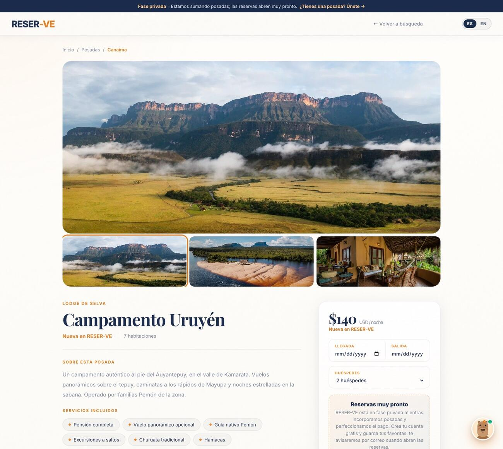
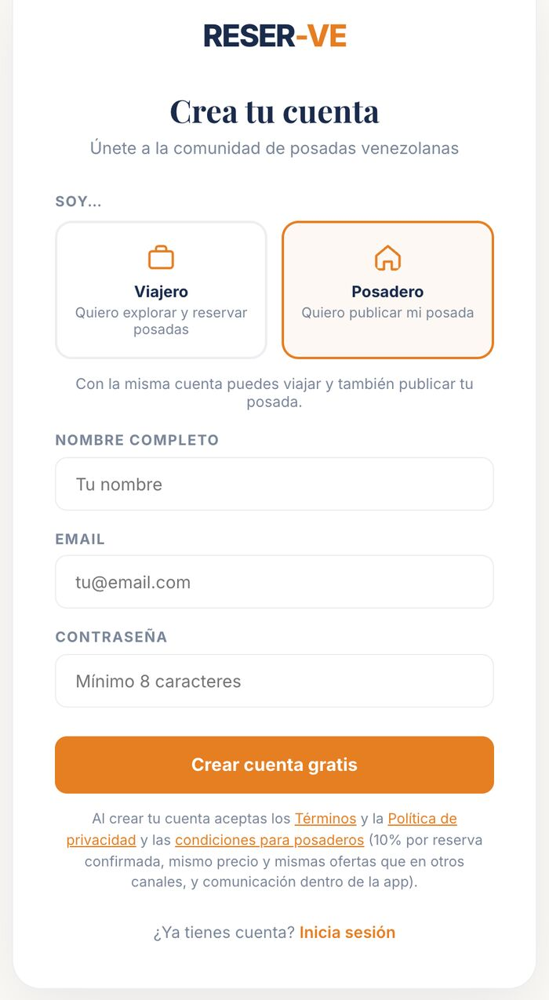
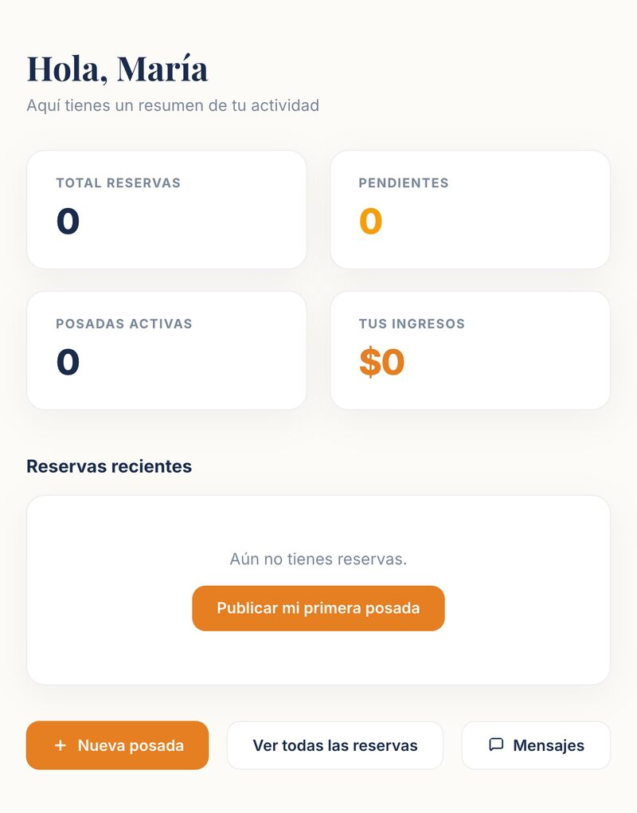
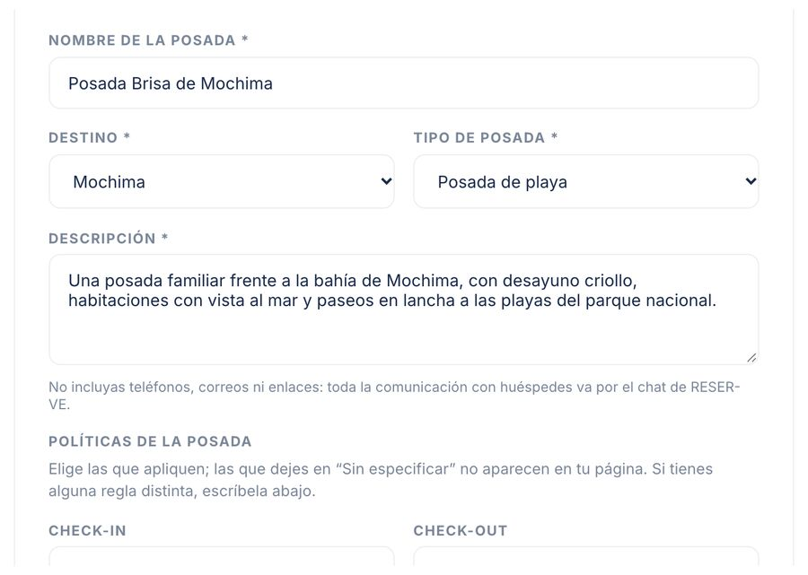
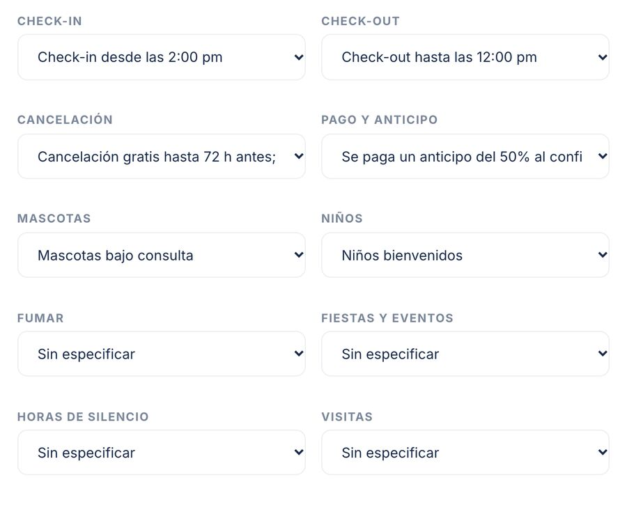
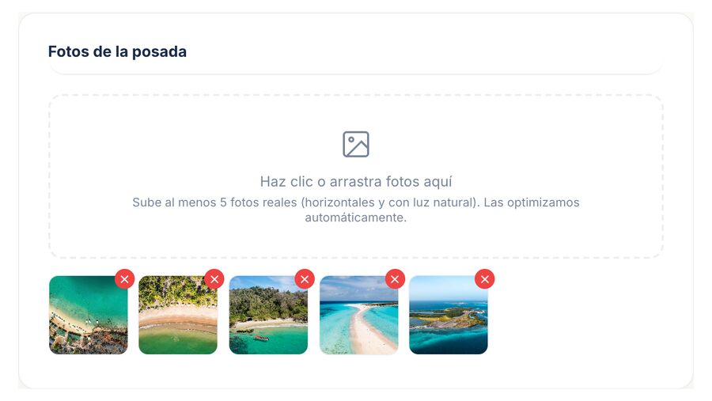
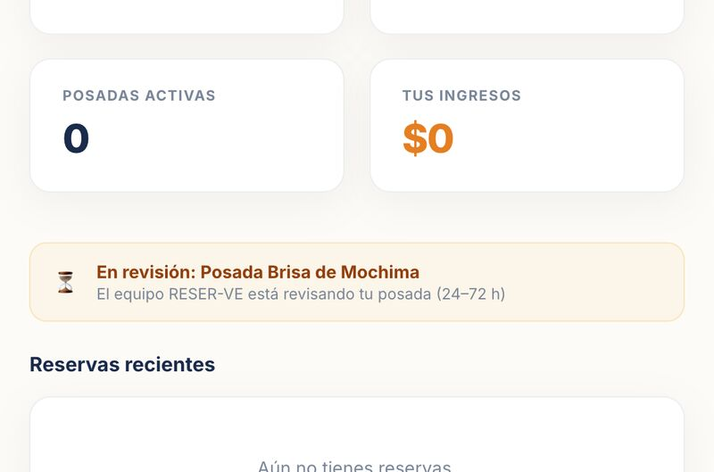

RESER-VE es la nueva plataforma hecha para las posadas de Venezuela. Publicar es gratis, cobras como siempre lo has hecho y solo pagas cuando recibes una reserva confirmada.
Las grandes plataformas no se hicieron pensando en Venezuela. Nosotros sí: pagos locales, precios en dólares, chat en español y un equipo que conoce el país y te atiende en persona.
Apareces en el buscador, en el mapa, en tu página de destino y en las rutas que arma Aurora, nuestra asistente de viajes.
Zelle, Pago Móvil, transferencia, efectivo en dólares o bolívares. El huésped te paga directo a ti.
Fotos, servicios, políticas, ubicación y reseñas. Una web propia sin pagar diseñador ni hosting.
Calendario por habitaciones que se sincroniza con Booking, Airbnb y Google Calendar, y donde anotas las reservas de WhatsApp.
Todo se habla por el chat de la app y queda registrado. Nuestro sistema detecta estafas y te protege a ti y al viajero.
Solo opinan huéspedes que de verdad se alojaron contigo. Tu buena reputación se convierte en más reservas.
Una página profesional, lista para compartir y para que los viajeros se enamoren de tu lugar. Sin pagar diseñador, sin mantener una web.

Galería grande a pantalla completa. Subes las fotos desde el teléfono y las optimizamos solas.
El viajero ve tu precio final en dólares y los métodos de pago que aceptas. Sin sorpresas.
El viajero te contacta por el chat de RESER-VE y la solicitud te llega por correo.
Sin mensualidad, sin costo de alta, sin contratos de permanencia. Solo un 10% de cada reserva confirmada, que es menos de lo que suelen cobrar las grandes plataformas internacionales.
Es lo que cuesta publicar tu posada, mantenerla en línea, usar el calendario, el chat y tu página.
| RESER-VE | Grandes plataformas internacionales | Solo WhatsApp e Instagram | |
|---|---|---|---|
| Costo por reserva | 10% | Suele ser del 15% al 18% | 0%, pero te encuentran pocos |
| Pagos locales (Pago Móvil, efectivo, Zelle) | ✓ Los que tú aceptes | Limitados | ✓ |
| Pensado para Venezuela | ✓ Hecho aquí, en español | ✕ | — |
| Página profesional y mapa | ✓ | ✓ | ✕ |
| Calendario sin overbooking | ✓ Y se sincroniza con ellas | ✓ | ✕ Cuaderno y memoria |
| Chat con registro y antifraude | ✓ | ✓ | ✕ |
| Atención cercana | ✓ Personas reales | Centros de llamadas | — |
Estas son las preguntas que más nos hacen los posaderos antes de unirse.
Perfecto: RESER-VE no los reemplaza, los complementa. Conectas sus calendarios una sola vez y las fechas se bloquean solas en todos lados. Es un canal más de ventas, con menos comisión.
Se publica desde el teléfono en unos 10 minutos, como llenar un formulario. Y si prefieres, escríbenos y lo hacemos contigo, paso a paso.
Nada. Publicar es gratis y no hay mensualidad. Si no recibes reservas, no pagas ni un dólar. Puedes pausar tu posada cuando quieras.
El huésped te paga directamente a ti, con los métodos que tú aceptes. RESER-VE no retiene tu dinero.
Cada solicitud llega con nombre, fechas y número de huéspedes, y tú decides si la confirmas. Todo queda escrito en el chat, que nuestro sistema vigila contra fraudes.
No. Tú pones tu precio. Solo pedimos que sea el mismo que en tus otros canales y que, si haces una oferta en otro lado, también la pongas aquí. Así el viajero confía.
Porque te protege: si hay un malentendido, queda registro de lo acordado. Y evita que alguien se haga pasar por ti para estafar a tus huéspedes.
Un equipo venezolano respaldado por Dos Locos de Viaje, una comunidad de viajeros que recorre el país y cree en las posadas como la mejor forma de conocerlo.
Con esto listo, publicar te toma unos 10 minutos, desde el teléfono o la computadora.
5 o más, horizontales y con buena luz: habitaciones, baño, áreas comunes y la vista.
Precio por noche en dólares, igual al de tus otros canales, y cuántas habitaciones tienes.
Hora de llegada y salida, cancelación, anticipo y si aceptas mascotas o niños. Se eligen en menús.
Zelle, Pago Móvil, transferencia, efectivo en dólares o bolívares…
Si quieres el punto exacto, mantén pulsado sobre tu posada en Google Maps y copia los números.
Qué hace especial tu posada y su entorno. Sin teléfonos, correos ni redes: todo va por el chat.
Hoy estamos en fase privada: tu posada ya se ve en la web y te avisaremos por correo antes de abrir las reservas al público.
Recibes la solicitud por correo y en Panel → Reservas.
Confirmas o rechazas en menos de 24 h. Sin respuesta, se cancela sola.
Pulsas “Chat” y le envías tus datos de pago y cómo llegar.
El viajero te paga directamente a ti.
Lo recibes y, al irse, puede dejarte una reseña ⭐.
Comisión: te enviaremos el resumen de reservas confirmadas y el 10% a pagar. Te explicaremos cómo pagarla antes del lanzamiento.
Así se ve cada pantalla. Puedes seguir esta guía con el teléfono en la mano.
Entra a reser-ve.com/posaderos y pulsa “Registra tu posada”. Elige Posadero, escribe tu nombre, tu correo y una contraseña, y pulsa “Crear cuenta gratis”.
¿Ya tienes cuenta de viajero? Usa la misma: en tu menú, pulsa “Publica tu posada” y acepta las condiciones.

Es tu centro de control: reservas, posadas, calendario y mensajes. Pulsa “+ Nueva posada” (o “Publicar mi primera posada”).

Nombre de la posada, destino (si no está, elige “Otro” y escríbelo), tipo y una descripción corta y honesta. Más abajo pones el precio por noche, las habitaciones y la capacidad.

Nada que redactar: elige en los menús tu check-in, check-out, cancelación, anticipo, mascotas, niños y más. Debajo, marca con un clic los extras que apliquen: planta eléctrica, tanque de agua, acceso en lancha…

Toca el recuadro o arrastra tus fotos: 5 o más, horizontales y con buena luz. Se suben y optimizan solas. Luego marca tus características, servicios y métodos de pago.
Espera a que terminen de subir las fotos: el botón de enviar se activa cuando acaban.

Pulsa “Enviar a revisión”. En tu panel verás “En revisión”. La revisamos en 24 a 72 horas y te avisamos por correo cuando esté publicada, o qué debes ajustar.
Puedes editarla cuando quieras desde Mis posadas → Editar.

RESER-VE cuenta tus habitaciones libres cada noche y nunca acepta una reserva si no te queda habitación. Anota lo que te llega por otros lados o sincroniza tus otras plataformas.
| Si… | Haz esto |
|---|---|
| Lo llevas todo a mano (cuaderno, WhatsApp, teléfono) | Cada reserva que te llegue por fuera, anótala en el calendario: son 10 segundos. Y ninguna reserva de RESER-VE es firme hasta que tú la confirmas, así que siempre puedes revisar antes. |
| Estás en Booking, Airbnb o Expedia | Conecta sus calendarios una sola vez y se bloquean solos en ambos lados. |
| Prefieres no hacerlo tú | Escríbenos con las fechas ocupadas y las anotamos nosotros. |
Entra a Panel → Calendario. Cada día muestra cuántas habitaciones te quedan libres.
Toca el día de llegada y luego la última noche, o escribe las fechas.
Elige de dónde viene (WhatsApp, Instagram, teléfono, Booking, Airbnb…), cuántas habitaciones ocupa y, si quieres, el nombre del huésped. Guardar.
¿Vas a cerrar por vacaciones? Usa “Cerrar posada” y se bloquean todas las habitaciones.
De ellos hacia RESER-VE: copia el enlace iCal de la plataforma y pégalo en Calendario → Trae tus reservas de otras plataformas → Conectar.
De RESER-VE hacia ellos: copia tu enlace de RESER-VE (botón Copiar) y pégalo en Booking o Airbnb como calendario importado.
| Plataforma | Dónde está el enlace |
|---|---|
| Booking | Extranet → Tarifas y disponibilidad → Sincronizar calendarios |
| Airbnb | Calendario → Disponibilidad → Conectar calendarios |
| Google Calendar | Configuración del calendario → Dirección secreta en formato iCal |
Se actualiza cada pocas horas (y justo antes de aceptar una reserva). Si algún día hay más reservas que habitaciones, verás un aviso en rojo.
Edita datos, precios y fotos cuando quieras. Pausa tu posada si no quieres recibir viajeros; al reactivarla pasa por una revisión rápida.
Confirma, rechaza o cancela, abre el chat con el huésped y mira tus habitaciones libres por noche.
Todas tus conversaciones en un lugar. En Mi cuenta cambias tu contraseña o eliminas tu cuenta.
Mismo precio y mismas ofertas que en tus otros canales (WhatsApp, redes, tu web, Booking, Airbnb). Si haces una promoción fuera, también va aquí.
Todo por la app: no invites a los viajeros que te llegaron por RESER-VE a reservar o pagar por fuera.
Información veraz: fotos reales, precios y servicios al día.
Publica hoy gratis, asegura tu 10% durante 12 meses y sal primero cuando abramos las reservas al público.
Publicar mi posada → reser-ve.com/posaderos